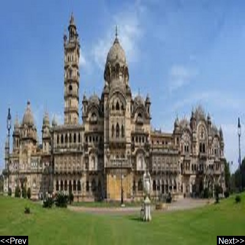

|  |
|
Nazarbaug palace Nazarbaug Palace or Nazar Bagh Palace is the Gaekwad's royal palace in the city of Vadodara, Gujarat state, western India. The Nazar Bagh Palace' was built in 1871. It has three storeys and is the oldest palace in Baroda. Address: Panigate Rd, Chhipwad, Vadodara, Gujarat |